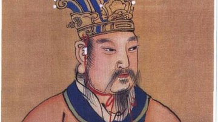

Yu the Great

Yu is considered the founder of the Xia Dynasty, but as with the Xia Dynasty, there is not much information out there about him.
Zhou Dynasty
The Zhou Dynasty was the longest lasting dynasty in early Chinese history. They made large advancements in things like agriculture through irrigation and the use of iron.